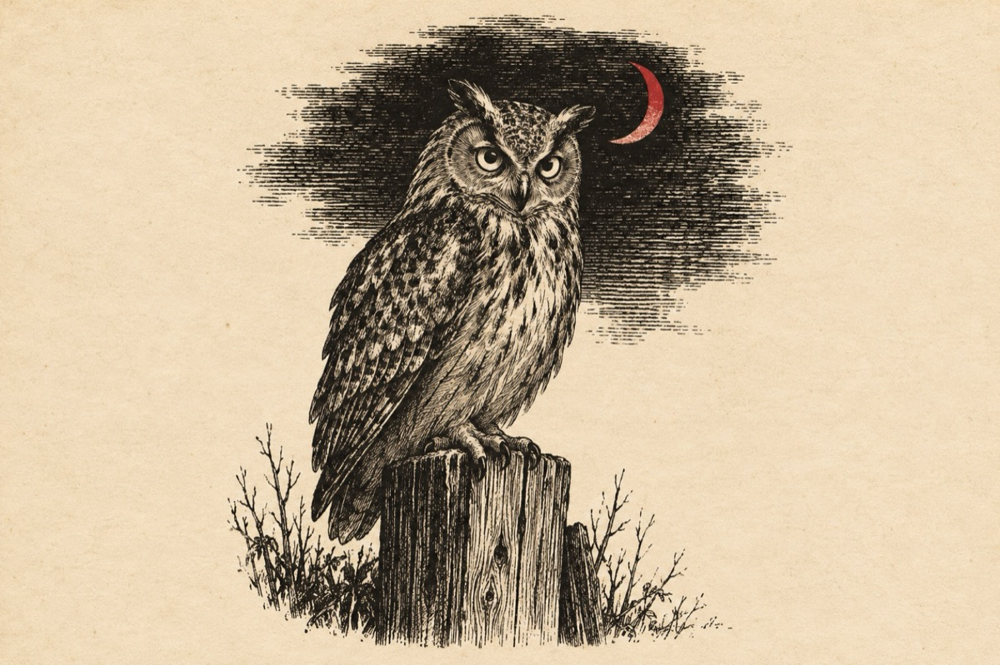

Bufnița
Mă bate mereu un gând
De ce nu-s cu lumea-n rând
La mine noaptea e zi
Iară ziua este noapte
Mai este-n lume dreptate?
Când vecinele se culcă
Stomăcelul mă mănâncă
Câteodată chiar mă doare
Și-atunci plec la vânătoare
N-am nici faruri, nici lanternă
Tot timpul lucrez în beznă
Ziua nu mi-i lumea clară
Și mă tem c-am rămas chioară!
Fără arme, fără cal,
Am pătruns în tribunal
Și m-am hotărât pe-ndată
Să dau statu-n judecată.
Procurorii-au cercetat
Și uitați ce-au constatat
Că am ochi fosforescenți
Și în noapte indiscreți!
Și-au decis dacă se poate
Să fiu utilaj de noapte
Iar un procuror obraznic
M-a numit pe post de paznic
Și am fost amenințată
C-o să fiu concediată
Dacă nu accept numirea
O să-și schimbe denumirea
Din bufniță îngâmfată
Într-o găină plouată
Și-auziți ce îmi oferă
Un serviciu de șomeră!
Mă întreb în plină noapte
Oare am sau nu dreptate?
Vasile Groza
Apare și în: Copile sau Cartea copiilor, Poezii cu animale.